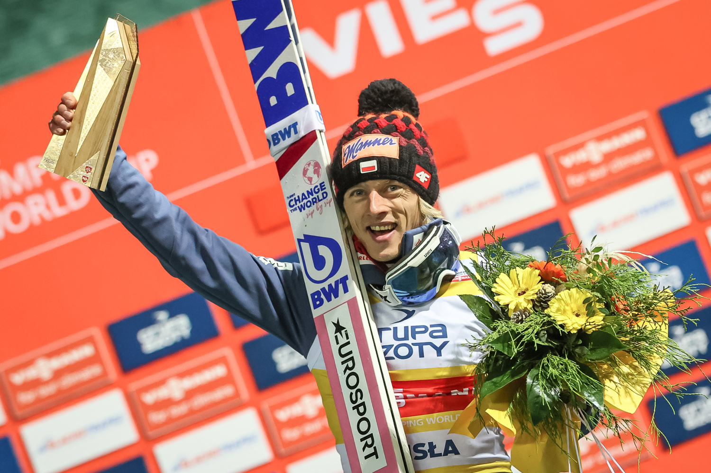

Dawid Kubacki wygrał drugi konkurs Pucharu Świata w skokach narciarskich w Wiśle. Polak po skokach na 131 m i 133,5 m pokonał drugiego Anze Laniska o 8,3 pkt. Podium uzupełnił Marius Lindvik. 9. miejsce zajął Piotr Żyła, a 23. był Paweł Wąsek.
Dziewięciu Polaków awansowało do drugiego konkursu Pucharu Świata w skokach narciarskich w Wiśle. W zawodach niestety nie zobaczyliśmy Kamila Stocha, który w kwalifikacjach został zdyskwalifikowany za nieregulaminowy kombinezon.
